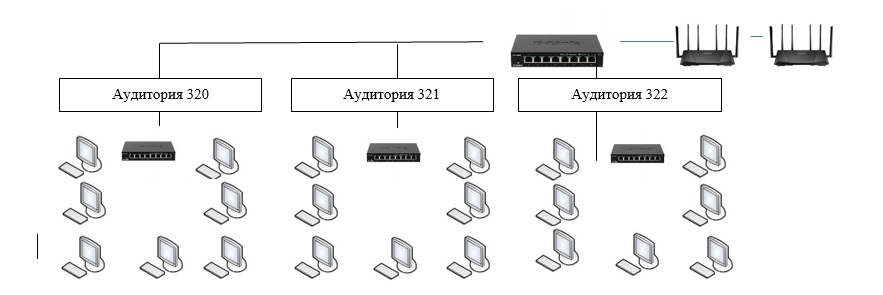

Компьютерный центр
Общие сведения о подразделе
В состав компьютерного центра нашего техникума входят:
Кабинет №318 – лаборатория информатики и ИКТ с количеством персональных компьютеров (далее ПК) 10 штук;
Кабинет №320 – лаборатория систем управления БД с количеством ПК – 9 штук;
Кабинет №321 – лаборатория персональных ЕОМ с количеством ПК – 9 штук;
Кабинет №322 – кабинет технических средств управления с 9 ПК.
Штат компьютерного центра:
-заведующий учебными лабораториями информационных технологий
-инженер-электронщик
-лаборант и два оператора
Материальная база компьютерного центра включает в себя современные производительные компьютеры на базе двухъядерного процессора Intel Pentium G2030 3GHz, с оперативной памятью – 2 Гбайт, объёмом жёсткого диска – 500 Гбайт.
На базе компьютерного центра развёрнута локальная сеть, комбинированной топологии (рис.3), с центральным коммутатором, расположенным в кабинете заведующего учебными лабораториями. К нему подключены коммутаторы аудиторий №№321, 322, 320 и беспроводные маршрутизаторы, находящиеся на территории первого корпуса.
